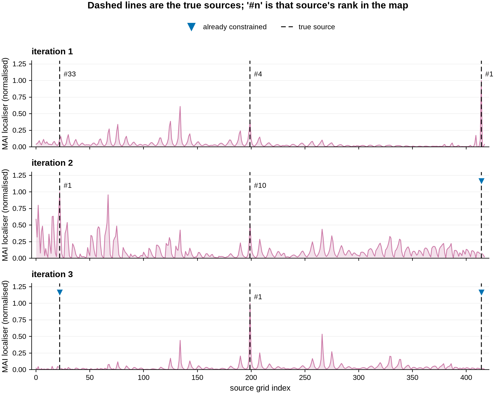
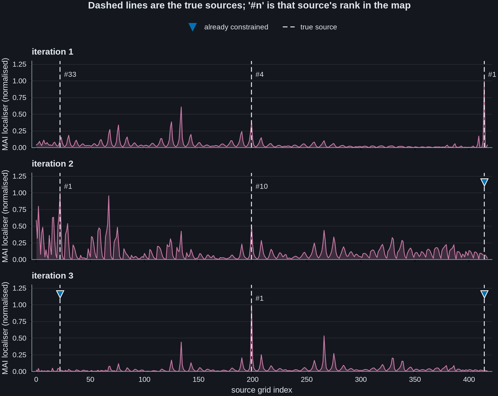
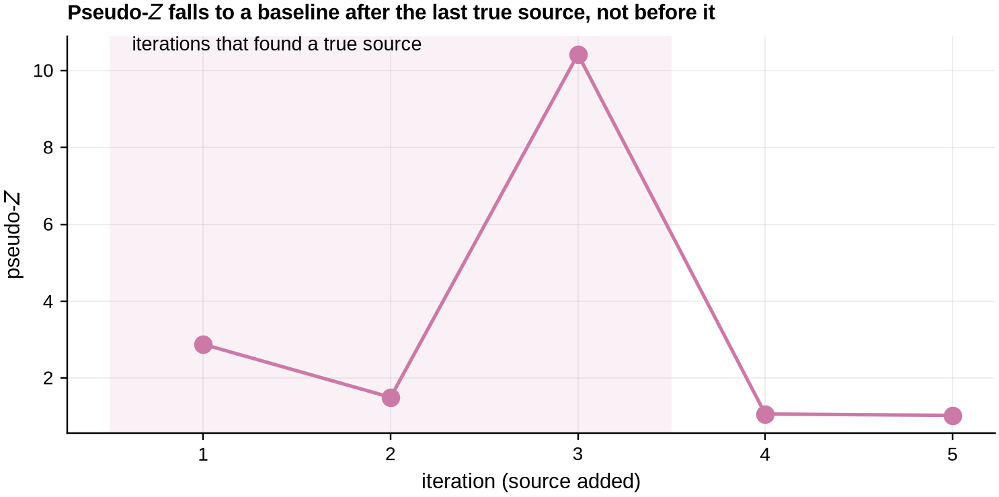
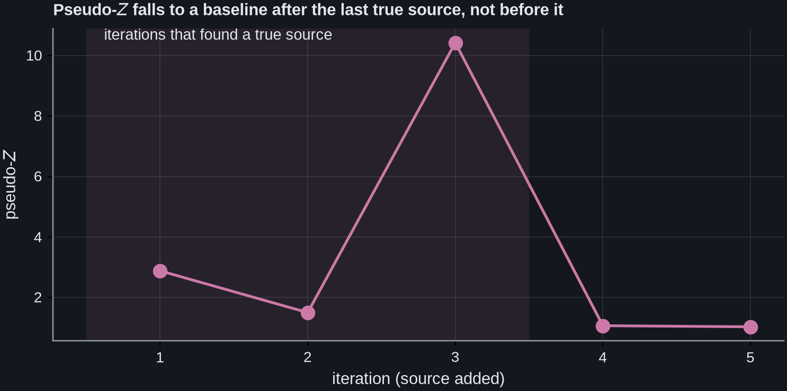
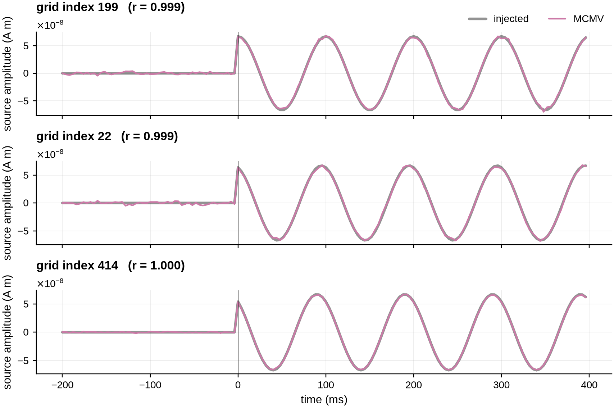
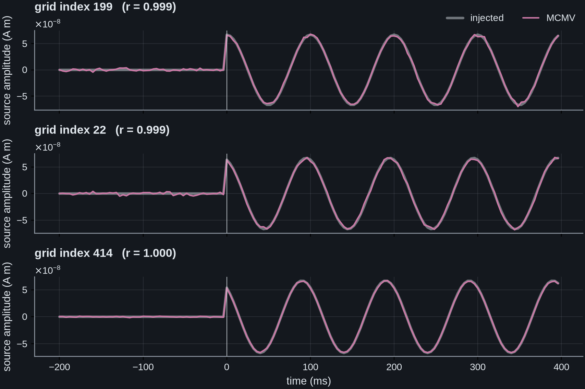

Note
Go to the end to download the full example code.
Discovering correlated sources with an MCMV scan#
The other MCMV examples reconstruct sources whose locations you already know. This one finds them.
Scanning for sources one at a time is the standard approach, and it has a blind spot that matters exactly when MCMV does: a single-source beamformer treats every other active source as interference, so when two sources are correlated it cancels them against each other and the weaker one never rises above the background. Scanning harder does not help, because the map itself is wrong.
The sequential search of [1] breaks the deadlock by changing the map instead. It finds the strongest source, constrains it, and rescans. Because a constrained source is nulled exactly rather than suppressed adaptively, the sources it was cancelling stop being cancelled. A source that was invisible in the first map can be the global maximum of the second.
This example shows that happening on a controlled simulation, then shows how to
decide how many sources are real. It uses
scan_mcmv(), which returns a
MCMVScanResult carrying the discovered sources, their
data-driven orientations, the per-iteration localizer maps and a ready-to-apply
MCMVBeamformer.
See MCMV versus LCMV for correlated sources: a simulation for the two-source cancellation mechanism in isolation, and MCMV joint reconstruction of correlated MEG sources for the joint reconstruction on real MEG.
References#
# Authors: Sepehr Shirani <sepehrshirani@gmail.com>, <s.shirani@ucl.ac.uk>
# Muzhi Wang <muzhi.wang@ucl.ac.uk>
# Jade Serfaty <jade.serfaty.17@ucl.ac.uk>
# License: BSD-3-Clause
import matplotlib.pyplot as plt
import mne
import numpy as np
from mne.beamformer import apply_lcmv_cov, make_lcmv
from mne.cov import compute_whitener
from advance_beamlab import (
apply_mcmv,
localizer_value,
optimal_orientation,
scan_mcmv,
)
mne.set_log_level("ERROR")
A self-contained EEG sphere model (no dataset download). An average-reference projector is mandatory for inverse modelling in MNE.
montage = mne.channels.make_standard_montage("standard_1020")
ch_names = list(dict.fromkeys(montage.ch_names))
info = mne.create_info(ch_names, sfreq=250.0, ch_types="eeg")
info.set_montage(montage)
info = (
mne.io.RawArray(np.zeros((len(ch_names), 2)), info, verbose=False)
.set_eeg_reference("average", projection=True, verbose=False)
.info
)
sphere = mne.make_sphere_model("auto", "auto", info)
src = mne.setup_volume_source_space(sphere=sphere, pos=18.0)
fwd = mne.convert_forward_solution(
mne.make_forward_solution(info, None, src, sphere, eeg=True, meg=False),
force_fixed=True,
use_cps=False,
)
gain = fwd["sol"]["data"]
rr = fwd["source_rr"]
Inject three mutually correlated sources. They are 6-14 cm apart, so this is not a problem of spatial resolution: what hides them from a one-at-a-time scan is their temporal correlation.
centre = int(np.argmin(np.linalg.norm(rr - rr.mean(0), axis=1)))
dist_cm = np.linalg.norm(rr - rr[centre], axis=1) * 100
second = int(np.argmin(np.abs(dist_cm - 6.0)))
ring = np.where((dist_cm > 5) & (dist_cm < 9))[0]
third = int(ring[np.argmax(np.linalg.norm(rr[ring] - rr[second], axis=1))])
truth = [centre, second, third]
rng = np.random.default_rng(0)
n_epochs, n_times = 60, 150
times = np.arange(n_times) / info["sfreq"] - 0.2
active = times >= 0.0
# 10 Hz oscillations at equal phase steps, giving pairwise correlations of 0.95,
# 0.95 and 0.80. That is the regime a single-source scan cannot resolve.
rho = 0.95
phi = np.arccos(rho)
sources = np.zeros((3, n_times))
for k, phase in enumerate((0.0, phi, 2 * phi)):
sources[k, active] = np.cos(2 * np.pi * 10 * times[active] + phase)
amp = 2e-5 / np.abs(gain[:, truth]).max() # land the sensor field at ~20 uV
signal = amp * (gain[:, truth] @ sources)
data = np.stack(
[signal + 0.05 * 2e-5 * rng.standard_normal(signal.shape) for _ in range(n_epochs)]
)
epochs = mne.EpochsArray(data, info.copy(), tmin=times[0], baseline=None, verbose=False)
data_cov = mne.compute_covariance(epochs, tmin=0.0, method="shrunk", verbose=False)
noise_cov = mne.compute_covariance(
epochs, tmin=None, tmax=0.0, method="shrunk", verbose=False
)
corr = np.corrcoef(sources[:, active])
print(f"true sources: {truth}")
pairs = f"{corr[0, 1]:.2f}, {corr[0, 2]:.2f}, {corr[1, 2]:.2f}"
print(f"pairwise source correlations: {pairs}")
/home/runner/work/advance_beamlab/advance_beamlab/examples/plot_mcmv_source_discovery.py:116: RuntimeWarning: Epochs are not baseline corrected, covariance matrix may be inaccurate
data_cov = mne.compute_covariance(epochs, tmin=0.0, method="shrunk", verbose=False)
/home/runner/work/advance_beamlab/advance_beamlab/examples/plot_mcmv_source_discovery.py:117: RuntimeWarning: Epochs are not baseline corrected, covariance matrix may be inaccurate
noise_cov = mne.compute_covariance(
true sources: [199, 22, 414]
pairwise source correlations: 0.95, 0.80, 0.95
What a one-at-a-time scan sees. A standard LCMV power map, noise-normalised so it is not depth-biased, over the same grid. It finds the strongest source and then reports peaks that are not sources at all: the rank it assigns each true location is printed below, and one of the three is buried in the noise floor.
lcmv = make_lcmv(
info,
fwd,
data_cov,
reg=0.05,
noise_cov=noise_cov,
pick_ori=None,
weight_norm="unit-noise-gain",
)
power = apply_lcmv_cov(data_cov, lcmv).data[:, 0]
lcmv_top3 = np.argsort(power)[::-1][:3]
lcmv_rank = {t: int((power > power[t]).sum()) + 1 for t in truth}
for t in truth:
print(f" true source {t:3d}: LCMV power rank {lcmv_rank[t]:3d} of {len(power)}")
true source 199: LCMV power rank 4 of 418
true source 22: LCMV power rank 41 of 418
true source 414: LCMV power rank 1 of 418
The sequential MCMV search. Each iteration scans the multi-source
localizer with the sources found so far held fixed. scan_mcmv is asked for
five sources, two more than exist, so the stopping behaviour is visible below.
discovered (in order): [414, 22, 199, 158, 221]
first three recover 3 of the 3 true sources
The map changes, not just the search. Each panel is the localizer map at one iteration, with the already-constrained sources marked. Follow the source that starts buried: constraining its correlated partner is what lifts it to the global maximum. The rank of each true location is printed in the panel titles.
The x-axis is the grid index of a 3-D volume, so neighbouring indices are not neighbouring locations. The sawtooth is that ordering, not noise.
grid = np.arange(fwd["nsource"])
fig, axes = plt.subplots(3, 1, figsize=(9, 7.2), sharex=True)
for k, ax in enumerate(axes):
m = np.asarray(result["maps"][k], dtype=float)
finite = np.isfinite(m)
norm = np.full_like(m, np.nan)
norm[finite] = (m[finite] - m[finite].min()) / np.ptp(m[finite])
ax.fill_between(grid, np.nan_to_num(norm), color="C3", alpha=0.22, lw=0)
ax.plot(grid, norm, color="C3", lw=1.0)
ranks = [int(np.nansum(m[finite] > m[t])) + 1 if finite[t] else None for t in truth]
for t, r in zip(truth, ranks, strict=True):
ax.axvline(t, color="#111111", ls=(0, (5, 3)), lw=1.2)
if r is not None:
ax.annotate(
f"#{r}",
(t, 1.09),
# Beside the rule, not centred on it. The dashed rule marking
# the same source spans the full height of the panel, so a
# centred label had the rule drawn straight through its digits.
textcoords="offset points",
xytext=(5, 0),
ha="left",
va="center",
fontsize=9,
annotation_clip=False,
)
for s in found[:k]:
ax.plot(s, 1.16, "v", color="C0", ms=9, mec="white", mew=1.0, clip_on=False)
ax.set(ylabel="MAI localiser (normalised)", ylim=(0, 1.3))
ax.set_title(f"iteration {k + 1}", loc="left")
ax.grid(axis="x", visible=False)
ax.margins(x=0.01)
axes[0].plot([], [], "v", color="C0", ms=9, label="already constrained")
axes[0].axvline(np.nan, color="#111111", ls=(0, (5, 3)), lw=1.2, label="true source")
axes[0].legend(loc="lower center", bbox_to_anchor=(0.5, 1.28), ncol=2)
axes[-1].set_xlabel("source grid index")
fig.suptitle("Dashed lines are the true sources; '#n' is that source's rank in the map")
fig.tight_layout()


How many sources are real? pseudo_z is the pseudo-Z of each source at
the iteration it was added. Once the search runs out of sources and starts
fitting noise the value drops to a baseline and stays there. That baseline is
generally not one and has to be judged from the data, as Moiseev et al.
stress. That is why scan_mcmv returns the whole sequence rather than
stopping on a threshold of its own.
Read the sequence whole rather than one step at a time, because the run before the drop is not a descending one. The search is greedy: each iteration maximises the joint localiser given the sources already fixed, so it does not take the strongest source next. Here the three genuine sources come out at 2.9, 1.5 and 10.4, and the two spurious ones at 1.1 and 1.0. The second genuine source is therefore nearer the noise floor than to either of its partners, and stopping at the first fall would have kept two sources and discarded the strongest of the three.
pz = np.asarray(result["pseudo_z"], dtype=float)
fig, ax = plt.subplots(figsize=(7, 3.6))
ax.plot(np.arange(1, len(pz) + 1), pz, "o-", color="C3", ms=8)
ax.axvspan(0.5, 3.5, color="C3", alpha=0.10, lw=0)
# The band marks the iterations that found a true source, which is known here
# from the simulation and is not something the curve reports. Calling it "three
# genuine sources" would imply that the three shaded values are the large ones,
# and the middle of them is the second smallest in the sequence.
#
# Left-aligned from the band's own left edge rather than centred on it: the
# largest value in the sequence is the third, so a centred label runs into the
# marker sitting at the top of the axes. The upper left of the band is empty.
ax.annotate(
"iterations that found a true source",
(0.62, ax.get_ylim()[1]),
ha="left",
va="top",
fontsize=9.5,
)
ax.set(
xlabel="iteration (source added)",
ylabel=r"pseudo-$Z$",
xticks=np.arange(1, len(pz) + 1),
)
ax.set_title(
"Pseudo-$Z$ falls to a baseline after the last true source, not before it",
loc="left",
fontsize=10,
)
fig.tight_layout()
print(f"pseudo-Z by iteration: {np.round(pz, 1).tolist()}")


pseudo-Z by iteration: [2.9, 1.5, 10.4, 1.1, 1.0]
Does the choice of localizer matter? 'mai' and 'mpz' are the two
power-based localizers of Table 1; 'mer' and 'rmer' instead target
phase-locked activity and need an evoked_cov. Comparing the two power
localizers is a cheap robustness check on a real analysis.
mai: [414, 22, 199]
mpz: [414, 22, 199]
Using the result. result['filters'] is the jointly-optimal MCMV
beamformer for the discovered set, ready for
apply_mcmv(). No second call is needed. Because the three
sources were found together, each filter nulls the other two, so the recovered
time courses are not contaminated by the partners they were cancelled by.
recovered = apply_mcmv(epochs.average(), result["filters"])
order = [found.index(t) for t in truth if t in found[:3]]
labels = [t for t in truth if t in found[:3]]
fig, axes = plt.subplots(len(order), 1, figsize=(8, 5.4), sharex=True)
t_ms = times * 1e3
# The two keys are the same in every panel, so they are drawn once, above the
# first. What actually differs panel to panel is the correlation, which belongs
# in each panel's own title rather than in a legend repeated three times.
for i, (ax, row, label) in enumerate(zip(axes, order, labels, strict=True)):
injected = amp * sources[truth.index(label)]
est = recovered[row]
r = np.corrcoef(est[active], injected[active])[0, 1]
first = i == 0
ax.plot(
t_ms,
injected,
color="#111111",
lw=2.4,
alpha=0.45,
label="injected" if first else "_nolegend_",
)
ax.plot(t_ms, est, color="C3", lw=1.4, label="MCMV" if first else "_nolegend_")
ax.axvline(0, color="k", lw=0.5)
ax.set(ylabel="source amplitude (A m)")
ax.set_title(f"grid index {label} (r = {abs(r):.3f})", loc="left")
if first:
ax.legend(loc="lower right", bbox_to_anchor=(1.0, 1.0), ncol=2, fontsize=9)
axes[-1].set_xlabel("time (ms)")
fig.tight_layout()


The primitives underneath. scan_mcmv is a loop over two public
functions, and they are worth seeing directly if you want to build a search of
your own. localizer_value() evaluates a Table-1 localizer
for a given set of constrained sources, and
optimal_orientation() returns, in closed form, the
orientation of a candidate source that maximises it, with no search over angles.
Both take the covariances explicitly, so they work in whatever space you hand them. Use the noise-whitened space, as the scan does internally: there the noise covariance is the identity. More importantly, an average referenced EEG covariance is rank deficient, so inverting it raw would make the localizer meaningless.
whitener, _ = compute_whitener(noise_cov, epochs.info, pca=True, verbose=False)
R_w = whitener @ data_cov.data @ whitener.T
R_w = 0.5 * (R_w + R_w.T)
R_w += 0.05 * np.trace(R_w) / R_w.shape[0] * np.eye(R_w.shape[0])
N_w = np.eye(R_w.shape[0])
gain_w = whitener @ gain
probe = np.random.default_rng(1)
value_true = localizer_value("mai", gain_w[:, truth], R_w, N_w)
value_random = np.mean(
[
localizer_value(
"mai", gain_w[:, probe.choice(fwd["nsource"], 3, False)], R_w, N_w
)
for _ in range(200)
]
)
print(f"MAI at the true triple: {value_true:.1f}")
print(f"MAI at a random triple: {value_random:.1f} (mean of 200)")
# The orientation solver needs the three orthogonal leadfields of a candidate
# location, so it takes a free-orientation forward. Given the sources already
# found, it returns the orientation of the next one directly.
fwd_free = mne.make_forward_solution(
info, None, src, sphere, eeg=True, meg=False, verbose=False
)
gain_free_w = whitener @ fwd_free["sol"]["data"]
u = optimal_orientation(
"mai",
gain_w[:, truth[:1]],
gain_free_w[:, 3 * truth[1] : 3 * truth[1] + 3],
R_w,
N_w,
)
print(f"closed-form orientation for source {truth[1]}: {np.round(u, 3)}")
MAI at the true triple: 51.1
MAI at a random triple: 2.9 (mean of 200)
closed-form orientation for source 22: [-0.001 -0. 1. ]
Total running time of the script: (0 minutes 8.008 seconds)